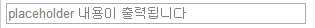
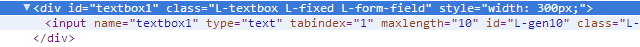
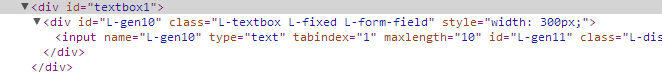
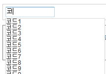
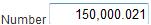
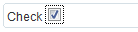
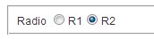
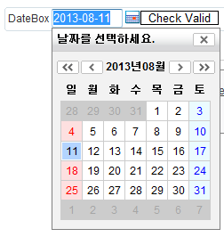

Form Field 사용하기
RichUI에서는 여러가지 Form Field 객체를 편리하게 사용할 수 있도록 콤포넌트들을 제공하고 있습니다.
Form Field에는 TextBox, CheckBox, ComboBox, RadioGroup 등 입력을 위한 객체가 있으며 RichUI에서는 그 외에 NumberBox, DateBox,
Calendar 등을 별도로 제공합니다. 이번 튜토리얼에서는 그중에서 가장 사용 빈도가 높은 TextBox와 ComboBox, NumberBox 등의 사용 예를 들어가면서 익혀보도록 하겠습니다.
LTextBox 사용하기
LTextBox(Rui.ui.form.LTextBox)는 div 또는 input 개체를 이용하여 생성하는 텍스트 입력 컨트롤입니다.
LTextBox는 RichUI에서 제공하는 상위 콤포넌트 중의 하나이며 대부분의 입력 필드 컨트롤이 이를 상속받아 구현하고 있습니다.
LTextBox가 제공하는 기능으로는 입력시 mask 지원, 입력시 문자 제한 기능, 미리 정의된 입력문자 형식 등이 있습니다.
그리고 RichUI에서는 일반적인 Form Field를 구성할 때 별도의 특징적인 기능 요구사항이 없다면 HTML의 기본 input 객체들을 활용하기를 권장합니다. 그 이유는 LTextBox를 Form Field 로 사용하게 되면 화면 렌더링시 생성되는 DOM Element가 많아져서 불필요한 DOM 생성 원인 중의 하나가 되기 때문입니다. 대신 그리드 컨트롤에서 편집기로 사용될 경우에 LTextBox 컨트롤을 연결하여 활용하시기를 권장합니다.
그러면 사용 방법에 대해 소스를 보면서 설명하겠습니다.
<script type="text/javascript" class="script-code">
Rui.onReady(function(){
var txtBox = new Rui.ui.form.LTextBox({ // LTextBox개체를 선언
applyTo: 'textbox1', // 해당 DOM Id 위치에 텍스트박스를 적용
width: 300, // 텍스트박스 폭을 설정
placeholder: 'placeholder 내용이 출력됩니다', // [옵션] 입력 값이 없을 경우 기본 표시 메시지를 설정
invalidBlur: false, // [옵션] invalid시 blur를 할 수 있을지 여부를 설정
//mask: 9999-999, // [옵션] 입력마스크를 설정
//inputType: Rui.util.LString.PATTERN_TYPE_STRING, // [옵션] 입력문자열로 영문자 입력만 허용
//includeChars: '123', // [옵션] 입력제한조건 중에서 지정한 문자는 입력 허용
attrs: { // [옵션] HTML 기본 속성(attribute) 값들을 설정
tabIndex: 1,
maxLength: 10
}
});
});
</script>
<body>
<div id="textbox1"></div>
</body>
실행 결과

위 예제에서 applyTo라는 속성은 해당 DOM Id를 찾아서 그 위치에 텍스트 박스를 생성해주는 옵션입니다. applyTo와는 달리 renderTo라는 옵션이 있습니다. 이 옵션은 해당 DOM Id를 찾아서 applyTo처럼 그 위치에 바로 텍스트박스 DOM을 만드는 것이 아니라, 그 위치에서 하위 DOM을 추가로 생성해서 텍스트박스를 생성해줍니다. 이는 개체를 렌더링할 경우의 div 영역에 관련된 내용입니다.
그러면 위 두가지 옵션을 적용했을 때 어떤 차이가 있는지 렌더링된 Element를 보면서 확인해 보겠습니다.
applyTo 속성을 적용한 결과

renderTo 속성을 적용한 결과

위 렌더링 결과를 보면 DOM 구성이 차이가 있는 것을 발견할 수 있습니다. applyTo보다 renderTo가 더 추가되었음을 확인할 수 있습니다. 일반적인 경우는 applyTo를 사용하면 되고, div 영역에 대한 내용이니 확인 후 사용하시기 바랍니다.
attrs 속성은 DOM Element들에 대한 여러 속성값을 LTextBox 생성 시 한꺼번에 넣어줄 경우 사용합니다.
LTextBox의 편리한 기능 중의 하나로 입력 mask 기능이 있습니다. 이것은 주민번호, 카드번호 등의 용도로 '-'을 설정하여 마스크를 정해 주면 구분자를 통해 입력 받을 수 있습니다.
일반적인 텍스트박스는 보통 입력을 자유롭게 하지만 때로 업무상으로 문자열만 입력 허용, 숫자만 입력허용, 특수문자 입력허용 등 몇 가지 입력 규칙을 적용할 때 사용하는 inputType이라는 옵션이 있습니다. 옵션 값은 다음과 같습니다.
- Rui.util.LString.PATTERN_TYPE_NUMBER (숫자만 입력허용)
- Rui.util.LString.PATTERN_TYPE_STRING (영문자만 입력허용)
- Rui.util.LString.PATTERN_TYPE_NUMSTRING (영문자와 숫자입력 허용)
- Rui.util.LString.PATTERN_TYPE_KOREAN (한글만 입력허용)
위 옵션에서 예외사항으로 includeChars라는 옵션을 이용하여 입력을 허용하는 값을 따로 설정하면 그 값들은 입력값 제한에도 불구하고 값을 입력할 수 있습니다. 그리고, 대부분의 옵션은 혼용 가능하나 mask기능과 (inputType, includeChars)은 같이 사용할 수 없습니다.
자동완성기능(제시어)
텍스트박스에서는 입력시 제시어 등을 통해 입력을 간편하게 할 수 있는 기능을 제공하고 있습니다.
사용방법은 위 텍스트박스와 동일하며 속성 값을 몇가지 추가해야 합니다.
필요한 속성으로는 filterMode라는 속성이 있습니다. 이 속성은 로컬리소스에서 제시어를 보여줄 것인지, 원격 서버에서 받은 리소스에서 제시어를 보여줄지 결정합니다.
그다음으로 필요한 속성으로는 autoComplete속성입니다. 자동완성기능을 사용할지 결정합니다. 아래 첫번째 예제는 로컬에서 제시어를 준비한 뒤 자동완성 기능을 보여주는 예입니다.
filterMode가 local인 경우에는 반드시 제시어가 담겨 있는 데이터셋 객체가 필요합니다.
Rui.onReady(function() {
var dataSet = new Rui.data.LJsonDataSet({
id: 'dataSet',
fields:[
{id: 'code'},
{id: 'value'}
]
});
dataSet.load({
url: './../../../../sample/data/data.json'
});
var txtBox = new Rui.ui.form.LTextBox({
id: 'textbox1',
applyTo: 'textbox1',
filterMode: 'local',
dataSet: dataSet,
autoComplete : true
});
});
실행 결과

다음에는 실시간으로 원격 서버에 요청해서 제시어를 제공하는 예입니다.
filterMode를 remote로 설정하고 filterUrl 속성을 추가합니다. filterUrl은 서버측 스크립트를 지정하는 부분으로
글자를 입력할때 마다 해당 제시어와 비슷한 정보들을 가져오기 위해 서버측에 요청합니다.
var txtBox = new Rui.ui.form.LTextBox({
id: 'textbox1',
applyTo: 'textbox1',
filterMode: 'remote',
autoComplete : true,
filterUrl: './textboxRemoteFilterSample.jsp'
});
LNumberBox 사용하기
LNumberBox(Rui.ui.form.LNumberBox)는 숫자만 입력할 수 있는 입력 컨트롤입니다.
1000단위 구분 표시, 소수점이하 자리 수 및 최대값과 최소값을 설정할 수 있습니다. 객체 사용 방법은 위 텍스트박스와 비슷합니다.
LNumberBox 생성시에는 아래와 같이 선언 합니다.
Rui.onReady(function(){
var numberBox = new Rui.ui.form.LNumberBox({
applyTo: 'numberbox1',
placeholder: '숫자를 입력해주세요.',
maxValue: 9999999999, // 최대값 입력제한 설정
minValue: -10, // 최소값 입력제한 설정
decimalPrecision: 3, // 소수점 자리수 3자리까지 허용
});
numberBox.setValue(150000.021); // 값을 설정할 경우
numberBox.getValue(); // 값을 얻어올 경우
});
실행 결과

LCheckBox 사용하기
LCheckBox(Rui.ui.form.LCheckBox)는 사용자가 여러 선택 사항에서 한 개 이상을 선택할 수 있는 컨트롤입니다. 체크박스는 LField 객체를 상속받고 있습니다. 사용방법은 텍스트박스를 생성한 것과 거의 동일한 구조입니다.
<script type="text/javascript">
Rui.onReady(function(){
var checkbox = new Rui.ui.form.LCheckBox({ // 체크박스를 생성
applyTo: 'checkbox1',
attrs: {
tabIndex: 1
}
});
checkbox.setValue(true); // 체크상태를 표시합니다.
});
</script>
<body>
<label for="checkbox1">Check</label>
<div id="checkbox1">
</body>
실행 결과

LRadio 사용하기
LRadio(Rui.ui.form.LRadio)는 여러 개의 선택사항 중 단 한 가지만 선택할 필요가 있는 기능을 제공할 때 사용하는 라디오 박스 컨트롤입니다. 그래서 체크박스와는 달리 보통 그룹 단위로 정의가 되며, LRadioGroup 객체에 두개 이상의 item을 연결하여 사용합니다. 라디오 박스를 생성하는 방법은 다음과 같습니다.
<script type="text/javascript">
Rui.onReady(function(){
var radioGroup = new Rui.ui.form.LRadioGroup({
applyTo: 'radio1', // 적용할 div id
width: 200,
items: [
{
label: 'R1', // 화면상에 표시할 타이틀
value: 'R1' // 선택되었을 때 설정된 실제 반환값
},
{
label: 'R2',
value: 'R2'
}
]
});
radioGroup.setValue("R2"); // R2 라디오버튼 선택
});
</script>
<body>
<label for="radio1">Radio</label>
<div id="radio1">
</body>
실행 결과

LCombo 사용하기
LCombo(Rui.ui.form.LCombo)는 key와 value로 구성되어 선택할 수 있는 리스트 정보를 제공하는 컨트롤입니다. 데이터셋과 연동하여 리스트를 구성할 수가 있습니다. 그러면 콤보박스를 생성하는 방법에 대해 알아보겠습니다.
<script type="text/javascript">
Rui.onReady(function(){
var combo = new Rui.ui.form.LCombo({
applyTo: 'combo1',
url: './../../../../sample/data/code.json' // 콤보에 바인딩할 데이터 설정
editable: true, // [옵션] 콤보박스에 표시된 값에 대해 편집 여부 설정
defaultValue: 'code2', // [옵션] 콤보 데이터 로딩시 기본 설정 값 지정
selectedIndex: -1 // [옵션] 콤보 데이터 로딩시 인덱스로 초기 선택 위치 지정
});
var dataSet = combo.getDataSet(); // 콤보에 바인딩된 데이터셋을 가져오기
dataSet.on('load', function(e){ // 콤보의 데이터가 전부 로딩된 시점의 이벤트
Rui.log('combo data loading complete.');
});
});
</script>
<body>
<div id="combo1"></div>
</body>
실행 결과
위 예제에서 url은 key와 value로 이루어진 데이터를 가지고 콤보 박스 리스트를 구성해 줍니다.
해당 데이터의 구조는 다음과 같습니다. 이 예제에서는 'code'가 key값에 해당하고 'value'는 value와 일치합니다.
실행 결과에서 보이는 것은 모두 value에 해당되는 값입니다.
[
{
"metaData": {"dataSetId": "dataset1"},
"records": [
{
"code": "code1",
"value": "코드1"
},
{
"code": "code2",
"value": "코드2"
},
... // 중간 데이터 생략
]
다음은 콤보박스의 데이터가 표시된 후 사용자가 콤보리스트중 특정 값을 선택했을 경우 값을 받아오는 방법과 값을 선택하는 방법에 대해 알아보겠습니다. 먼저 값을 선택된 code값을 받아올 경우에는 getValue를 사용하며, 콤보리스트 중에서 값을 선택할 경우에는 setValue('code값')로 선택할 수 있습니다.
combo.setValue('code2'); // 현재 콤보리스트에서 코드값 code2에 해당되는 값으로 콤보리스트 표시
combo.getValue(); // 현재 콤보리스트에서 선택되어있는 값에 해당되는 코드값 반환 , 여기서는 'code2'를 반환
DateBox 사용하기
날짜를 입력할 수 있는 컨트롤에는 LDateBox(Rui.ui.form.LDateBox)와 LCalendar(Rui.ui.calendar.LCalendar)가 있습니다.
이 둘은 사용방법에 따라 약간 차이가 있습니다. 먼저 LDateBox는 날짜를 직접 입력하거나 달력을 컨트롤을 통해 날짜를 선택하여 지정할 수 있는 입력 컨트롤입니다. 그러나 LCalendar는
날짜를 달력 컨트롤만 사용하여 선택할 수 가 있으며 몇가지 추가적인 기능을 제공합니다. 먼저 LDataBox사용법은 다음과 같습니다.
Rui.onReady(function(){
var dateBox = new Rui.ui.form.LDateBox({
applyTo: 'date1',
//, valueFormat: '%Y.%m.%d' , // 날짜 포맷설정 기본('%Y-%m-%d')
defaultValue: new Date() // 현재날짜로 설정
});
var date = new Date();
date = Rui.util.LDate.add(date, Rui.util.LDate.MONTH, 1);
// 날짜 설정 예
dateBox.setValue(date);
// 날짜 정보 얻기
dateBox.getValue();
});
위 예에서 valueFormat이라는 속성은 날짜입력시 날짜를 표현하는 형식입니다. 값을 지정하지 않으면 기본적으로 '%Y-%m-%d'으로 설정됩니다.
실행 결과

달력아이콘 선택시 입력필드값과 동일한 날짜가 달력컨트롤에 푸른색상으로 표시됩니다. 날짜를 변경하면 입력필드값도 같이 변경됨을 알 수 있습니다.

지금까지 몇 가지 Form Field 관련 컨트롤에 대해서 알아보았습니다. 더 자세한 내용은 API 및 샘플 문서를 참고하기 바랍니다.